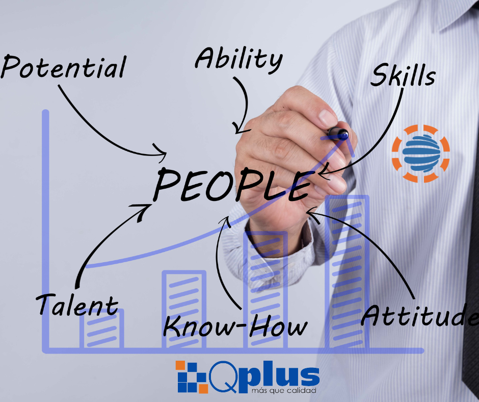

Gestión Estratégica
Automatice procesos de selección y contratación de personal.
Centralice hojas de vida, capacitaciones y bienestar laboral.
Garantice el cumplimiento de la normatividad legal vigente.
Administración de la información personal, laboral, académica, seguridad social de los colaboradores de la empresa, así como la ficha de ingreso del funcionario, las hojas de vida y diferentes listados como el listado de tiempo de servicio, cumpleaños y seguridad social.
Automatice procesos de selección y contratación de personal.
Centralice hojas de vida, capacitaciones y bienestar laboral.
Garantice el cumplimiento de la normatividad legal vigente.

|
Ficha del Funcionario |
• Creación y administración de la ficha integral de cada colaborador, incluyendo fotografía e información personal. • Gestión detallada de datos laborales, familiares, estudios realizados y seguridad social. • Opción para exportar la ficha completa del funcionario a formato Excel para reportes externos. |
|
Hojas de Vida |
• Administración de perfiles profesionales de los colaboradores de manera digital. • Soporte para adjuntar anexos y documentos soporte en múltiples formatos (Excel, Word, PDF, etc). • Centralización de certificados y soportes académicos vinculados directamente al perfil. |
|
Listados |
• Generación de listados automáticos en tiempo real: tiempo de servicio, seguridad social e información familiar. • Control de fechas especiales como cumpleaños y vencimientos de documentos. • Herramienta de exportación masiva a Excel para agilizar procesos administrativos. |
|
Estadísticas |
• Visualización de indicadores demográficos en tiempo real (estado civil, tipo de vivienda, vehículo, etc). • Análisis estadístico de la composición de la fuerza laboral y tipos de contratación vigentes. • Tableros de control para la toma de decisiones basada en la data sociodemográfica de la empresa. |